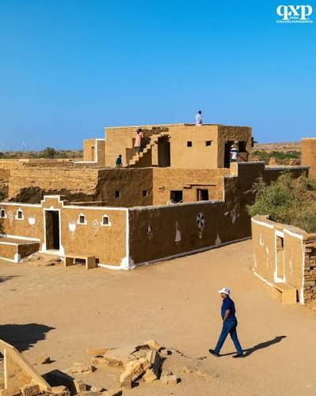
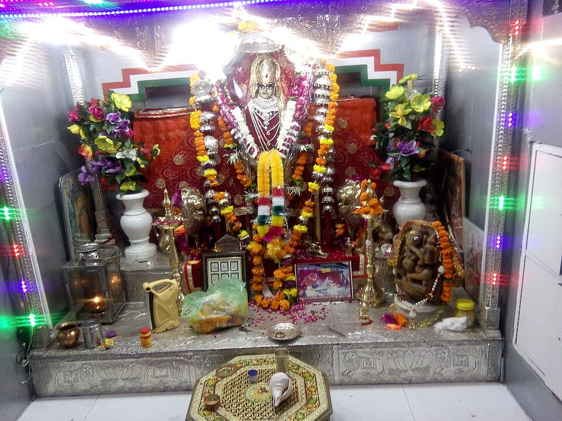

01
Jaisalmer City Sightseeing
Discuss a local route including Jaisalmer Fort, the havelis and Gadisar Lake. Stops depend on your available time and preferences.
Enquire about city tour →Discuss a local route including Jaisalmer Fort, the havelis and Gadisar Lake. Stops depend on your available time and preferences.
Enquire about city tour →Ask about the journey towards Tanot Mata Temple and Longewala. Border-area access may depend on permissions and current local conditions.
Enquire about this trip →Plan a taxi transfer to the dunes. Sunset visits and desert activities may need separate arrangements and charges.
Enquire about desert trip →
Build a city route to suit your travel time, pickup point and interests.
Plan local tour →
Add Kuldhara Village or other nearby stops to a customised sightseeing plan where practical.
Enquire about route →
Ask about taxi pickup and return arrangements. Confirm safari and camp activities separately.
Enquire about transfer →
Request a route plan and check current access and permission requirements before travelling.
Enquire about trip →Share your preferred departure time, return requirements, passenger count and pickup details. Tour timing, routes and inclusions are confirmed for your particular enquiry.